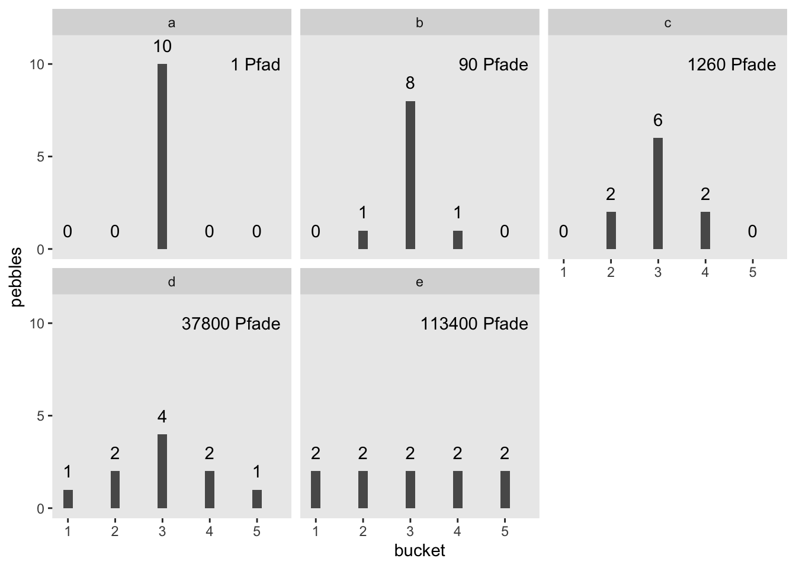

library(tidyverse)
library(tidytext)
library(hcandersenr) # Textdaten
library(easystats) # Komfort für deskriptive Statistiken, wie `describe_distribution`
library(entropy) # Entropie berechnen5 Informationstheorie
5.0.1 Lernziele
- Die grundlegenden Konzepte der Informationstheorie erklären können
5.0.2 Vorbereitung
- Lesen Sie diesen Text als Vorbereitung
5.0.3 Benötigte R-Pakete
5.1 Grundlagen
Die Informationstheorie ist eine der Sternstunden der Wissenschaft. Manche sagen dass Claude Shannon, der Autor der Theorie, auf einer Stufe mit Darwin und Einstein stehen sollte:
In this single paper, Shannon introduced this new fundamental theory. He raised the right questions, which no one else even thought of asking. This would have been enough to make this contribution earthshaking. But amazingly enough, Shannon also provided most of the right answers with class and elegance. In comparison, it took decades for a dozen of top physicists to define the basics of quantum theory. Meanwhile, Shannon constructed something equivalent, all by himself, in a single paper. Shannon’s theory has since transformed the world like no other ever had, from information technologies to telecommunications, from theoretical physics to economical globalization, from everyday life to philosophy. (…) I don’t think Shannon has had the credits he deserves. He should be right up there, near Darwin and Einstein, among the few greatest scientists mankind has ever had the chance to have.
Für die Statistik ist die Informationstheorie von hoher Bedeutung. Im Folgenden schauen wir uns einige Grundlagen an.
5.1.1 Shannon-Information
Mit der Shannon-Information (Information, Selbstinformation) quantifizieren wir, wie viel “Überraschung” sich in einem Ereignis verbirgt (Shannon 1948).
Ein Ereignis mit …
- geringer Wahrscheinlichkeit: Viel Überraschung (Information)
- hoher Wahrscheinlichkeit: Wenig Überraschung (Information)
Wenn wir also erfahren, dass ein unwahrscheinliches Ereignis eingetreten ist (Schnee im Sommer), sind wir überraschter als wenn wir höhen, dass ein wahrscheinliches Ereignis eingetreten ist (Schnee im Winter).
Die Information eines Ereignis ist also eng verbunden mit seiner Wahrscheinlichkeit oder auch mit den Odds eines Ereignisses.
Die Shannon-Information ist die einzige Größe, die einige wünschenswerte Anforderungen1 erfüllt:
- Stetig
- Je mehr Ereignisse in einem Zufallsexperiment möglich sind, desto höher die Information, wenn ein bestimmtes Ereignis eintritt
- Additiv: Die Summe der Information zweier Teilereignisse ist gleich der Information des Gesamtereignis
Definition 5.1 (Shannon-Information) Die Information ist so definiert:
\[I(x) = - \log_2 \left( Pr(x) \right)\]
Andere Logaritmusbasen sind möglich. Bei einem binären Logarithmus nennt man die Einheit Bit2.
Ein Münwzurf3 hat 1 Bit Information:
-log(1/2, base = 2)[1] 1Damit gilt: \(I = \frac{1}{Pr(x)}\)
Die Information ist eng verwandt mit den Odds bzw. Log-Odds (Logits):
\(\text{log-odds}(x)=\log \left({\frac {p(x)}{p(\lnot x)}}\right)\)
Logits können als Differenz zweier Shannon-Infos ausgedrückt werden:
\(\text{log-odds}(x)=I(\lnot x)-I(x)\)
Die Information zweier unabhängiger Ereignisse ist additiv.
Die gemeinsame Wahrscheinlichkeit zweier unabhängiger Ereignisse ist das Produkt der einzelnen Wahrscheinlichkeiten:
\(Pr(x,y) = Pr(x) \cdot Pr(y)\)
Die gemeinsame Information ist dann
\[ {\displaystyle {\begin{aligned}\operatorname {I}(x,y)&=-\log _{2}\left[p(x,y)\right]=-\log _{2}\left[p(x)p(y)\right]\\[5pt]&=-\log _{2}\left[p{(x)}\right]-\log _{2}\left[p{(y)}\right]\\[5pt]&=\operatorname {I} (x)+\operatorname {I} (y)\end{aligned}}} \]
Beispiel 5.1 (Information eines wahrscheinlichen Ereignisses) Die Information eines fast sicheren Ereignisses ist gering.
-log(99/100, base = 2)[1] 0.01449957Beispiel 5.2 (Information eines unwahrscheinlichen Ereignisses) Die Information eines unwahrscheinlichen Ereignisses ist hoch.
-log(01/100, base = 2)[1] 6.643856Beispiel 5.3 (Information eines Würfelwurfs) Die Wahrscheinlichkeitsfunktion eines Würfel ist
\({\displaystyle Pr(k)={\begin{cases}{\frac {1}{6}},&k\in \{1,2,3,4,5,6\}\\0,&{\text{ansonsten}}\end{cases}}}\)
Die Wahrscheinlichkeit, eine 6 zu würfeln, ist \(Pr(X=6) = \frac{1}{6}\).
Die Information von \(X=6\) beträgt also
\(I(X=6) = -\log_2 \left( Pr(X=6) \right) = -\log_2(1/6) \approx 2.585 \, \text{bits}\).
-log(1/6, base = 2)[1] 2.584963Beispiel 5.4 (Information zweier Würfelwurfe) Die Wahrscheinlichkeit, mit zwei Würfeln, \(X\) und \(Y\), jeweils 6 zu würfeln, beträgt \(Pr(X=6, Y=6) = \frac{1}{36}\)
Die Information beträgt also
\(I(X=6, Y=6) = -\log_2 \left( Pr(6,6) \right)\)
-log(1/36, base = 2)[1] 5.169925Aufgrund der Additivität der Information gilt
\(I(6,6) = I(6) + I(6)\)
-log(1/6, base = 2) + -log(1/6, base = 2)[1] 5.1699255.1.2 Entropie
(Informations)entropie ist die Summe der Informationen der Ereignisse einer Zufallsvariablen, \(X\).
Definition 5.2 (Informationsentropie) Informationsentropie ist so definiert:
\[H(p) = - \text{E log} (p_i) = - \sum_{i = 1}^n p_i \text{log} (p_i) = E\left[I(X) \right]\]
Die Informationsentropie ist also die “mittlere” oder “erwartete Information einer Zufallsvariablen.
5.1.3 Gemeinsame Information
Die gemeinsame Information (mutual information, MI) zweier Zufallsvariablen \(X\) und \(Y\), \(I(X,Y)\), quantifiziert die Informationsmenge, die man über \(Y\) erhält, wenn man \(X\) beobachtet. Mit anderen Worten: Die MI ist ein Maß des Zusammenhangs zweier (nominaler) Variablen. Im Gegensatz zur Korrelation ist die MI nicht auf lineare Abhängigkeiten beschränkt.
Die MI quantifiziert den Unterschied zwischen der gemeinsamen Verteilung \(Pr(X,Y)\) und dem Produkt einer einzelnen4 Wahrscheinlichkeitsverteilungen, d.h. \(Pr(X)\) und \(Pr(Y)\).
Wenn die beiden Variablen (stochastisch) unabhängig5 sind, ist ihre gemeinsame Information Null:
\(I(X,Y) = 0 \quad \text{gdw} \quad \bot(X,Y)\).
Dann gilt nämlich:
\(\log \left( \frac{Pr(X,Y)} {Pr(X) \cdot Pr(Y)} \right) =\log(1) = 0\).
Das macht intuitiv Sinn: Sind zwei Variablen unabhängig, so erfährt man nichts über die zweite, wenn man die erste kennt. So ist Kenntnis der Sternzeichens einer Person und ihrer Körpergröße unabhängig.
Das Gegenteil ist auch wahr: Sind zwei Variablen voneinander komplett abhängig, so weiß man alles über die zweite, wenn man die erste kennt.
Die gemeinsame Information kann man sich als Summe der einzelnen gemeinsamen Informationen von \(XY\) sehen (s. ?tbl-mi1):
\(I(X,Y) = \Sigma_Y \Sigma_y Pr(x,y) \underbrace{\log \left( \frac{Pr(X,Y)}{Pr(X) Pr(Y)} \right)}_\text{punktweise MI}\)
Die Summanden der gemeinsamen Information bezeichnet man auch als punktweise gemeinsame Information (pointwise mutual information, PMI).
MI ist also der Erwartungswert der PMI.
5.1.4 Maximumentropie
Definition 5.3 (Maximumentropie) Die Verteilungsform, für die es die meisten Möglichkeiten (Pfade im Baumdiagramm) gibt, hat die höchste Informationsentropie.
5.1.5 Ilustration
Sagen wir, Sie stehen vor 5 Eimern und haben 10 Kieselsteine bei sich, die mit den Nummern 1 bis 10 beschriftet sind (McElreath 2020). Weil Sie nichts besseres zu tun haben, werfen Sie die Kiesel in die Eimer und zwar so, dass die Wahrscheinlichkeit für einen Kiesel in einen bestimmten Eimer zu landen für alle Eimer gleich ist. Sie werfen also Ihre 10 Kiesel und betrachten das Ergebnis; die Kiesel sind jetzt in einem bestimmten (zufälligen) Arrangement auf die Eimer verteilt. Jede Aufteilung (der 10 Kiesel in den 5 Eimern) ist gleich wahrscheinlich6 – die Wahrscheinlichkeit, dass alle 10 Kiesel in Eimer 1 landen ist also gleich hoch wie die Wahrscheinlichkeit, dass jeder Eimer einen Kiesel abkriegt. Jetzt kommt’s: Manche Arrangements können auf mehrere Arten erzielt werden als andere. So gibt es nur eine Aufteilung für alle 10 Kiesel in einem Eimer (Teildiagramm a, in Abbildung 5.1). Aber es gibt 90 Möglichkeiten, die Kiesel so aufzuteilen, dass 2 in Eimer 2 landen, 8 in Eimer 4 und 2 in Eimer 4, s. Teildiagramm b in Abbildung 5.1. Teildiagramme c bis e zeigen, dass die Anzahl der Aufteilungen schnell astronomisch hoch wird, wenn sich die Kiesel “gleichmäßiger” auf die Eimer verteilen. Die gleichmäßigste Aufteilung (Diagramm e) hat die größte Zahl an möglichen Anordnungen. Eine Aufteilung der Kiesel auch als Pfad durch ein Baumdiagramm beschrieben werden.
Hier sind ein paar verschiedene Arrangements, deren Anzahl von Aufteilungen wir hier anschauen:
d <-
tibble(a = c(0, 0, 10, 0, 0),
b = c(0, 1, 8, 1, 0),
c = c(0, 2, 6, 2, 0),
d = c(1, 2, 4, 2, 1),
e = 2)
d| a | b | c | d | e |
|---|---|---|---|---|
| 0 | 0 | 0 | 1 | 2 |
| 0 | 1 | 2 | 2 | 2 |
| 10 | 8 | 6 | 4 | 2 |
| 0 | 1 | 2 | 2 | 2 |
| 0 | 0 | 0 | 1 | 2 |

Hier sind die Wahrscheinlichkeitsverteilungen der 5 Arrangements:
d %>%
mutate_all(~. / sum(.))| a | b | c | d | e |
|---|---|---|---|---|
| 0 | 0.0 | 0.0 | 0.1 | 0.2 |
| 0 | 0.1 | 0.2 | 0.2 | 0.2 |
| 1 | 0.8 | 0.6 | 0.4 | 0.2 |
| 0 | 0.1 | 0.2 | 0.2 | 0.2 |
| 0 | 0.0 | 0.0 | 0.1 | 0.2 |
Dann kann man die Wahrscheinlichkeit einfach in Entropie umrechnen7:
d %>%
mutate_all(~ . / sum(.)) %>%
gather() %>%
group_by(key) %>%
summarise(h = -sum(ifelse(value == 0, 0, value * log(value))))| key | h |
|---|---|
| a | 0.0000000 |
| b | 0.6390319 |
| c | 0.9502705 |
| d | 1.4708085 |
| e | 1.6094379 |
Das ifelse dient nur dazu, eine Wahrscheinlichkeit von 0 eine Eintropie von 0 zu verpassen8, denn sonst würden wir ein Problem rennen, wenn wir \(log(0)\) ausrechnen.
log(0)[1] -Inf5.2 Zufallstext erkennen
Kann man wohl Zufallstext maschinell erkennen? Sicher gibt es viele Ansätze, um das Problem anzugehen. Lassen Sie uns einen Ansatz erforschen. Erforschen heißt, wir erforschen für uns, es handelt sich um eine didaktische Übung, das Ziel ist nicht, Neuland für die Menschheit zu betreten.
Aber zuerst müssen wir überlegen, was “Zufallstext” bedeuten soll.
Nehmen wir uns dazu zuerst einen richtigen Text, ein Märchen von H.C. Andersen zum Beispiel. Nehmen wir das Erste aus der Liste in dem Tibble hcandersen_de, “das Feuerzeug”.
das_feuerzeug <-
hcandersen_de %>%
filter(book == "Das Feuerzeug") %>%
unnest_tokens(input = text, output = word) %>%
pull(word)
head(das_feuerzeug)[1] "es" "kam" "ein" "soldat" "die"
[6] "landstraße"Das Märchen ist 2688 Wörter lang.
wortliste <-
hcandersen_de %>%
filter(book == "Das Feuerzeug") %>%
unnest_tokens(output = word, input = text) %>%
pull(word) %>%
unique()
head(wortliste)[1] "es" "kam" "ein" "soldat" "die"
[6] "landstraße"Jetzt ziehen wir Stichproben (mit Zurücklegen) aus dieser Liste und erstellen damit eine Art “Prototext”.
prototext <- sample(x = wortliste, size = length(das_feuerzeug)*10^2, replace = TRUE)
head(prototext)[1] "zweite" "denen" "zugeben" "ebenso" "hofdame" "trommeln"Zählen wir, wie häufig jedes Wort vorkommt:
prototext_count <-
tibble(prototext = prototext) %>%
count(prototext)
head(prototext_count)| prototext | n |
|---|---|
| ab | 373 |
| abend | 337 |
| aber | 364 |
| abflog | 383 |
| abschlagen | 381 |
| acht | 370 |
Der Häufigkeitsvektor von wortliste besteht nur aus Einsen, so haben wir ja gerade die Wortliste definiert:
wortliste_count <-
tibble(wortliste = wortliste) %>%
count(wortliste)
head(wortliste_count)| wortliste | n |
|---|---|
| ab | 1 |
| abend | 1 |
| aber | 1 |
| abflog | 1 |
| abschlagen | 1 |
| acht | 1 |
Daher ist ihre Informationsentropy maximal.
entropy(wortliste_count$n, unit = "log2")[1] 9.47978Die Häufigkeiten der Wörter in prototext
entropy(prototext_count$n, unit = "log2")[1] 9.477858Zählen wir die Häufigkeiten in der Geschichte “Das Feuerzeug”
das_feuerzeug_count <-
tibble(text = das_feuerzeug) %>%
count(text)
head(das_feuerzeug_count)| text | n |
|---|---|
| ab | 2 |
| abend | 3 |
| aber | 21 |
| abflog | 1 |
| abschlagen | 1 |
| acht | 1 |
entropy(das_feuerzeug_count$n, unit = "log2")[1] 8.075194Desiderata, sagt man↩︎
oder shannon↩︎
wie immer, als fair angenommen, wenn sonst nichts anderes angegeben ist↩︎
auch als marginalen Wahrscheinlichkeiten oder Randwahrscheinlichkeiten bezeichnet↩︎
Für stochastische Unabhängigkeit kann das Zeichen \(\bot\) verwendet werden↩︎
so ähnlich wie mit den Lottozahlen↩︎
Regel von L’Hopital↩︎